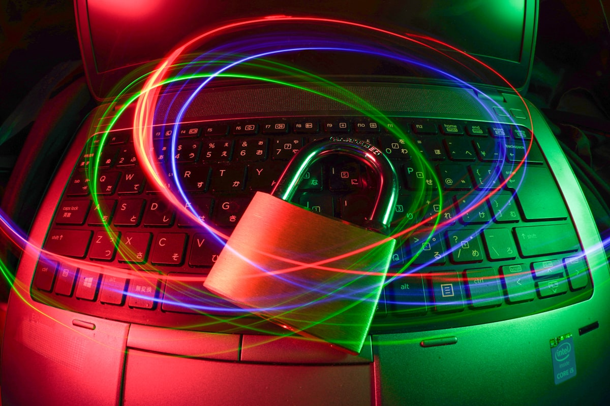

本論文は、ACM Computing Surveys誌に2025年に掲載された査読付き学術論文であり、次世代道路交通（Next-Generation Road Transportation: NGRT）における包括的なサイバーセキュリティ課題を体系的にサーベイしたものである。自動運転車（AV）、コネクテッドビークル（CV）、Vehicle-to-Everything（V2X）通信、スマートインフラストラクチャが統合される次世代交通システムは、従来の交通インフラとは比較にならないほど巨大な攻撃対象領域（アタックサーフェス）を形成する。
自動運転技術の急速な進展とコネクテッド化の加速により、道路交通システムのサイバーセキュリティリスクは質的・量的に変容している。センサー欺瞞攻撃（LiDARスプーフィング、カメラへの敵対的摂動）、V2X通信への中間者攻撃、ECUへの不正アクセス、リモートコード実行など、従来の自動車セキュリティの枠を超える脅威が現実のものとなっている。本論文は、これらの脅威を体系的に分類・整理し、既存の防御技術と未解決の課題を包括的にまとめることを目的としている。
論文では、次世代道路交通のサイバーセキュリティを以下の観点から分析している。
自動運転スタックにおいて特に深刻な脅威として、センサー欺瞞攻撃が挙げられる。LiDARや画像認識系に対する敵対的サンプル攻撃は、物体検出や走行判断を誤らせる可能性があり、従来のファイアウォールや暗号化では対処できない。また、V2X通信基盤が普及するにつれ、偽の道路情報や信号制御データをブロードキャストする「Sybilアタック」や「リプレイアタック」のリスクも高まる。
OTA（Over-The-Air）ソフトウェアアップデートの仕組みもまた、サプライチェーン攻撃の新たな経路となりうる。悪意あるアップデートが車両制御系に侵入するシナリオを防ぐためには、コード署名・完全性検証・ロールバック機能の実装が不可欠である。
論文は、既存の防御技術として、セキュアゲートウェイ、ゾーン分離、HSMベースの認証、機械学習型IDSなどを整理している。しかし、リアルタイム制約が厳しい自動運転制御系への暗号処理の組み込み、異種ベンダー間でのセキュリティ情報共有、長期的なソフトウェアサポート体制といった領域では、依然として解決されていない課題が多い。
次世代道路交通のサイバーセキュリティは、技術的課題にとどまらず、標準化・規制・プライバシー・社会的信頼を包含する複合的な問題である。本論文は、この分野における研究地図を提供するサーベイとして、自動運転開発者・セキュリティ研究者・規制当局にとって重要な参照資料となる。